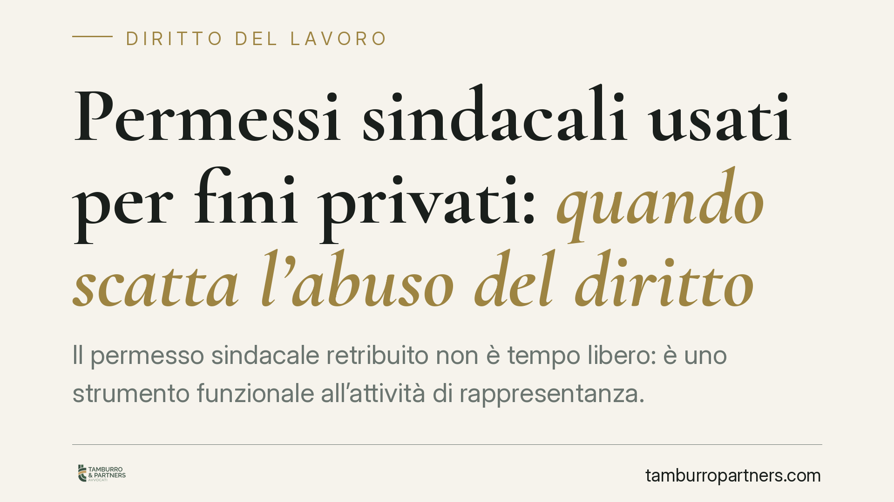

Permessi sindacali usati per fini privati: quando scatta l'abuso del diritto
Il permesso sindacale retribuito non è tempo libero: è uno strumento funzionale all'attività di rappresentanza. Una recente pronuncia di merito affronta il caso del dirigente sindacale che impiega quelle ore per scopi personali, qualificando la condotta non come semplice assenza, ma come abuso del diritto. Ne derivano conseguenze rilevanti sul piano disciplinare e sulla legittimità dei controlli datoriali.

Il caso e il principio
Una pronuncia di merito è tornata sul tema dell'utilizzo dei permessi sindacali retribuiti, previsti dagli artt. 23 e 24 dello Statuto dei lavoratori (L. 300/1970). Il nodo: che valore ha l'impiego di quelle ore per finalità estranee all'attività sindacale?
La risposta è netta. Non si tratta di una questione meramente quantitativa — "quante ore sono state usate" — ma qualitativa: come e per cosa sono state usate. Il permesso è un diritto a destinazione vincolata. Impiegarlo per fini privati ne tradisce la funzione.
*Avvertenza metodologica: si tratta di una singola decisione di merito, non di un orientamento consolidato né di un principio della Cassazione. Va letta come indicazione interpretativa, non come diritto vivente.*
Inquadramento normativo
Gli artt. 23 e 24 St. lav. riconoscono ai dirigenti delle rappresentanze sindacali permessi retribuiti e non retribuiti, finalizzati all'espletamento del mandato. La retribuzione è giustificata proprio dalla destinazione: l'ordinamento sopporta il costo dell'assenza perché quel tempo serve a una funzione tutelata.
Qui entra la distinzione che merita attenzione.
L'assenza ingiustificata è una violazione *quantitativa*: il lavoratore non c'è e non ha titolo per non esserci. L'abuso del permesso è una violazione *qualitativa*: il titolo formalmente esiste, ma viene esercitato in contrasto con la sua funzione. In quest'ultimo caso non si viola una regola di presenza, ma il dovere di correttezza e buona fede nell'esecuzione del contratto (artt. 1175 e 1375 c.c.).
È una differenza che pesa. L'abuso del diritto consiste nell'esercitare una prerogativa legittima per uno scopo diverso da quello per cui è riconosciuta. Non è mancata presenza: è uso distorto di uno strumento.
Il tema dei controlli
Su questo punto occorre precisione, perché è facile incorrere in un errore ricorrente.
La verifica sull'utilizzo del permesso non trova fondamento negli artt. 2 e 3 St. lav. (controlli sull'attività lavorativa tramite guardie giurate e personale di vigilanza). Quelle norme riguardano l'adempimento della prestazione. Qui, invece, la prestazione è legittimamente sospesa.
La base corretta è la categoria giurisprudenziale dei controlli difensivi: accertamenti diretti non a sorvegliare l'attività lavorativa, ma a verificare condotte illecite estranee al mero inadempimento. In questa cornice si colloca anche l'eventuale ricorso a investigatori privati, ammesso entro limiti rigorosi di proporzionalità e di tutela della riservatezza.
Resta un contrappeso di segno opposto. Il datore che eserciti i controlli in modo strumentale, per colpire l'attività di rappresentanza, espone sé stesso al rischio di condotta antisindacale ex art. 28 St. lav., con le conseguenze che ne derivano. La linea di confine è sottile e va valutata caso per caso.
Implicazioni pratiche
Per il dirigente sindacale: il permesso retribuito va impiegato per l'attività per cui è concesso. L'uso privato, se accertato, può essere qualificato come abuso del diritto e, in ipotesi di gravità, condurre a sanzioni disciplinari fino al licenziamento. Non vale l'alibi del "tanto il monte ore mi spetta".
Per il datore di lavoro: un sospetto di abuso non autorizza controlli generalizzati. L'accertamento deve essere mirato, proporzionato e difensivo, e la raccolta delle prove deve rispettare i limiti di legge. Un controllo eccessivo o pretestuoso può ritorcersi contro chi lo dispone.
Cosa fare in concreto
Se sei un rappresentante sindacale:
- Documenta l'attività svolta durante i permessi (riunioni, assemblee, incontri), così da poterne dimostrare la pertinenza.
- Non cumulare il permesso con incombenze personali: la commistione è il terreno su cui si innesta la contestazione.
Se sei un datore di lavoro:
- Prima di attivare un controllo, verifica la sussistenza di un fondato sospetto concreto, non di un generico malcontento.
- Assicurati che l'accertamento rispetti proporzionalità e limiti di legge sulla riservatezza: una prova raccolta illegittimamente è inutilizzabile.
- Valuta preventivamente il rischio di una reazione ex art. 28 St. lav., soprattutto se il lavoratore riveste un ruolo di rappresentanza attiva.
La fase di contestazione richiede una valutazione preventiva degli elementi raccolti e della legittimità della loro acquisizione: è lì che si decide la tenuta dell'intera vicenda.
---
Contributo informativo a cura di Tamburro & Partners Avvocati - Avv. Giuseppe Tamburro. Non costituisce parere legale.
Ogni storia di lavoro ha i suoi tempi.
Se gestisci HR e vuoi un confronto su contenzioso, ispezioni o licenziamenti, scrivi allo studio. Ti rispondiamo entro un giorno lavorativo.